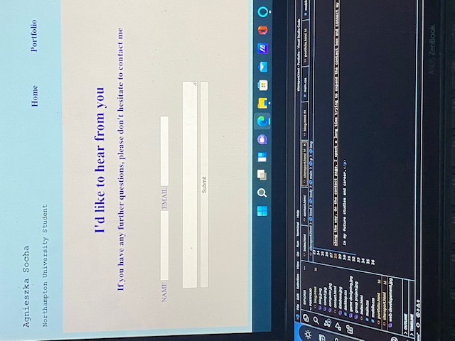

My website design and development report
Introduction
I took my first web development class seven weeks ago. My first step towards developing my website was to study hard until I learned how to create a layout of my site using a grid, or how to create a responsive website using hamburger icon and moving menu, as well as how to create a contact form. I started my portfolio website once I had all the necessary information.
Website Developement Process
Initially, I designed my website on a piece of paper to see what it would look like. To be more accessible for users, I have placed the menu at the top of the page. I chose blue and grey as the colours for my website because they remind me of modern technology and computers, and they coordinate very well together. I then began developing my website. I have encountered many problems along the way. I spent a long time on the contact page, trying to expand the contact box and connect my email to the contact form but was unable to do so.  Making my website responsive also was a challenge. There were also many happy moments when I managed to create a grid layout on the first try or insert images and cut them to a suitable size.
Summary
As a whole, I am pleased with what I have accomplished after just seven weeks of studying web development with no prior knowledge. I am aware that my website is very basic, and I need more knowledge and practice in order to create a professional-looking website, but we all have to start somewhere. Through the development of this website, I learned many valuable skills that will help me in my future studies and career.